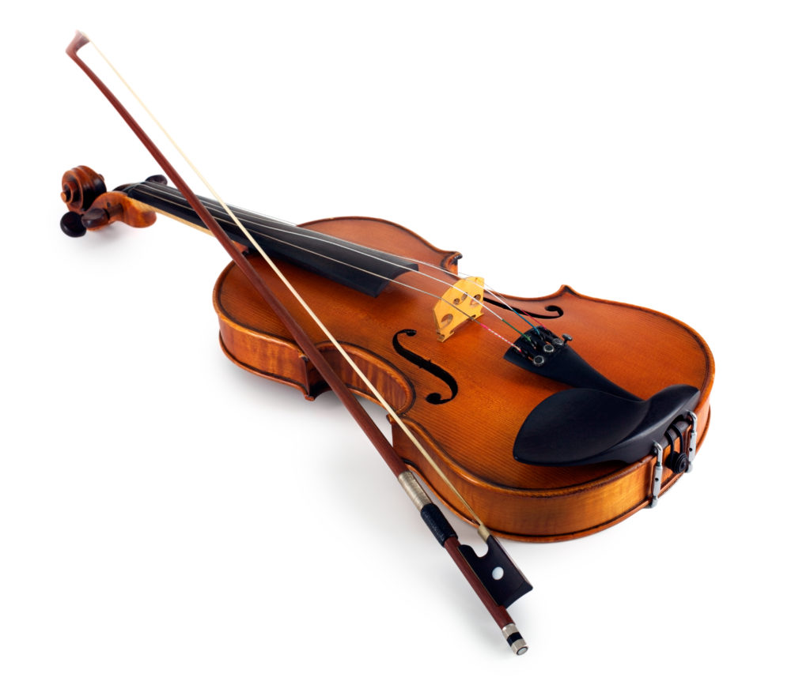
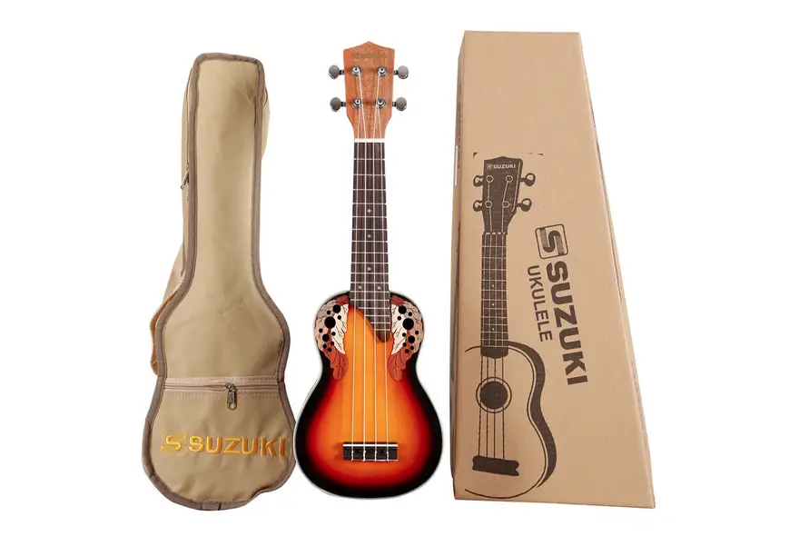
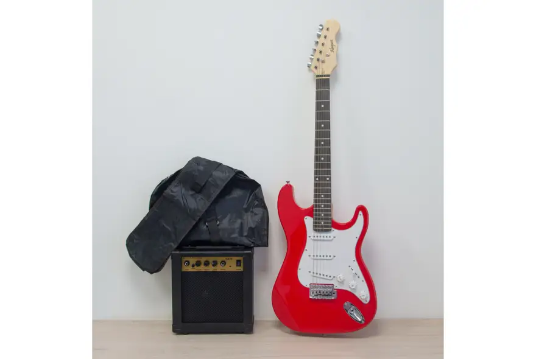
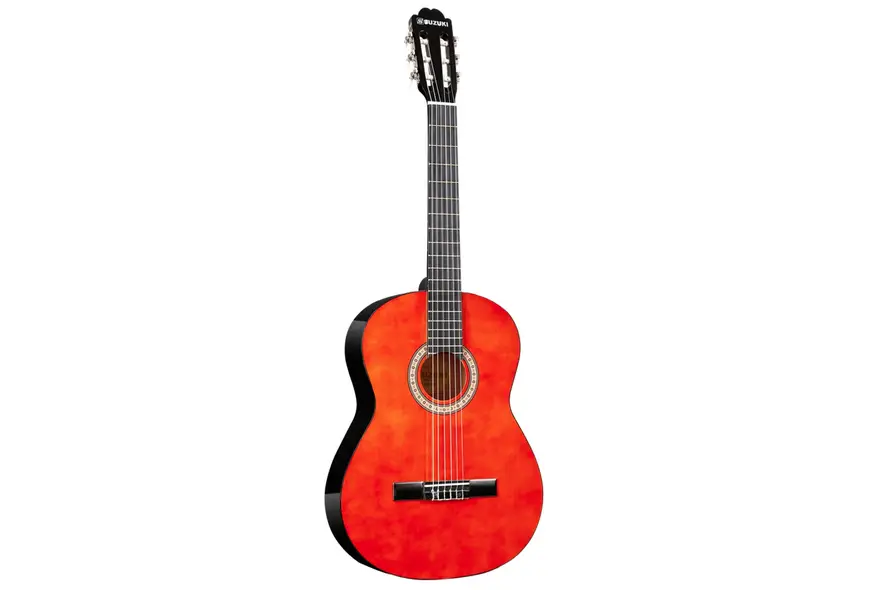

Instrumentos de Cuerda
|  |
Violin Precio: $49.900 Espectacular Violín de 1/2 ideal para tus primeros contactos con la música, de muy buena calidad, es una excelente opción para principiantes de color natural con estuche rígido y accesorios. |
|  |
Ukelele Precio: $39.900 Ukulele ideal para principiantes que desean comenzar a iniciarse en el mundo de la música. Este instrumento es muy fácil de transportar y te otorga un sonido definido, brillante y potente. |
|  |
Guitarra Electrica Precio: $159.900 Disfruta con esta guitarra XGTR de la conexión con la música. Con este instrumento descubrirás nuevos acordes, entonarás tus canciones y disfrutarás de la vida musical. Explora, amplifica tu creatividad y desarrolla tu pasión. |
|  |
Guitarra Acustica Precio: $59.900 Disfruta con esta guitarra de la conexión con la música. Está diseñada para aficionados y profesionales. Con este instrumento descubrirás nuevos acordes, entonarás tus canciones y disfrutarás de la vida musical. |